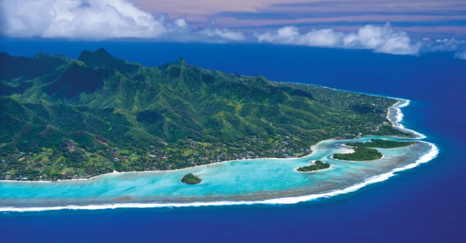

Kia orana! My name is Tavai, and I'm a 25-year-old born and raised on the beautiful island of Rarotonga. As the largest and most populous of the Cook Islands, Rarotonga is the beating heart of our nation, offering a unique blend of stunning natural beauty and rich cultural heritage.

Figure 1: Muri Beach, one of Rarotonga's most picturesque spots
One of the must-visit places on Rarotonga is Muri Beach, a breathtaking lagoon with crystal-clear waters and soft white sand. It's the perfect spot for swimming, snorkeling, and soaking up the sun. Another highlight is the Cross Island Trek, a challenging but rewarding hike that takes you through lush rainforests and offers panoramic views of the island.
 Figure 2: The Cross Island Trek, a popular hiking trail
Figure 2: The Cross Island Trek, a popular hiking trail
No visit to Rarotonga is complete without experiencing our rich cultural traditions. The name "Rarotonga" itself comes from the words "raro" meaning "below" and "tonga" meaning "south," referring to its location in relation to the Southern Cook Islands. Be sure to attend a cultural show or visit the Ara Metua, the ancient road that circles the island, to learn about our history and customs.
 Figure 3: A traditional cultural show on Rarotonga
Figure 3: A traditional cultural show on Rarotonga